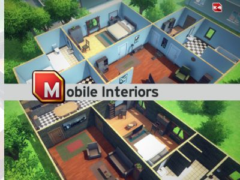
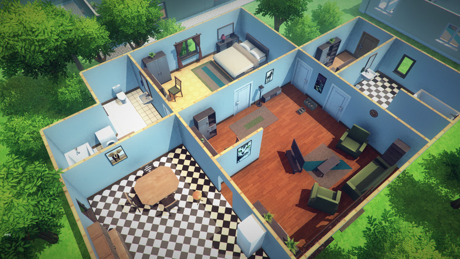
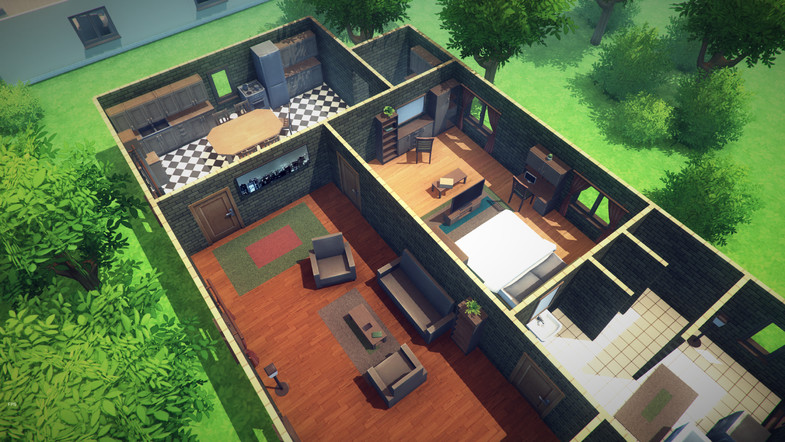
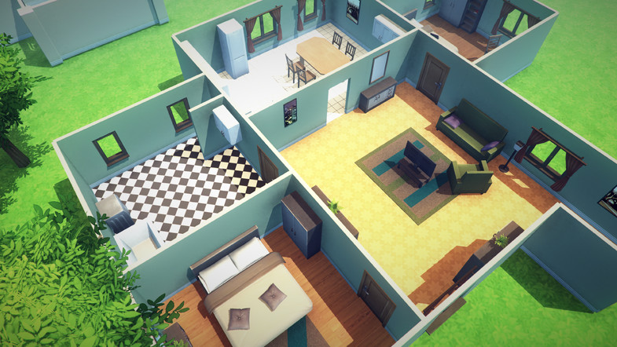
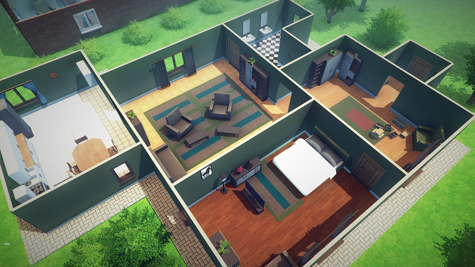
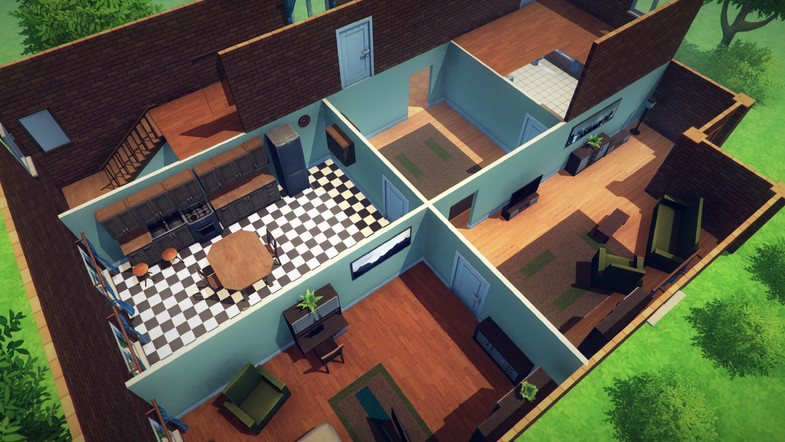
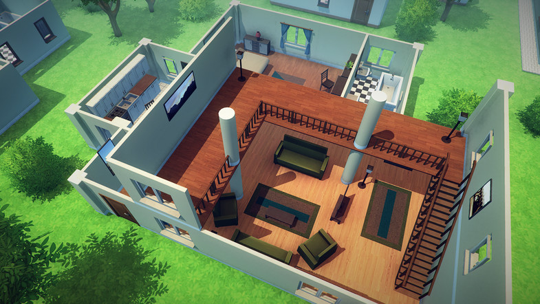

Mobile Interiors: 1.0Mobile Interiors (size: 12.58Mb) version: 1.0

Description
Price: $39.00.
Publisher: Manufactura K4.
Description:The set contains about 280 components for building interiors in a slightly cartoon-style.
In the package you will find: walls, stairs, floors, furniture, accessories, paintings, vegetation, demo level.
Pack runs smoothly on mobile devices.Extra Images





